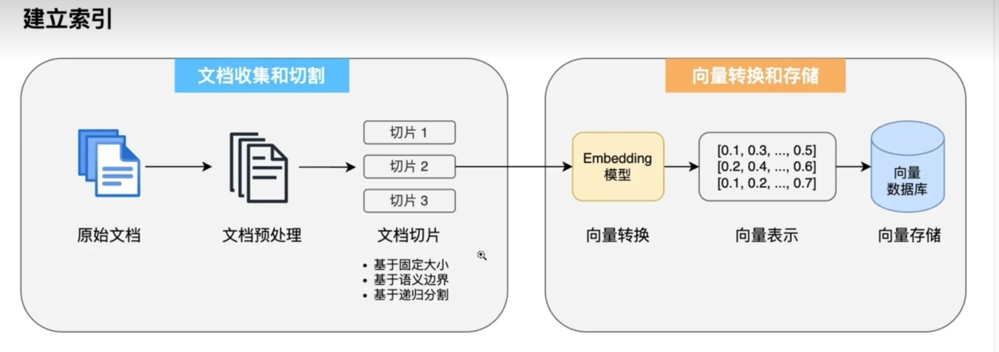
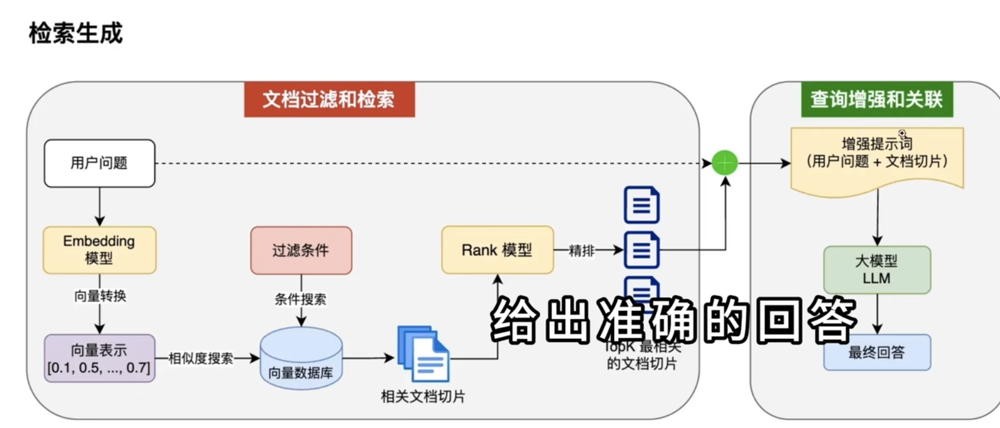
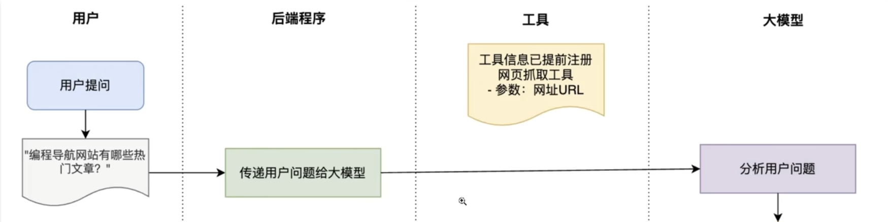
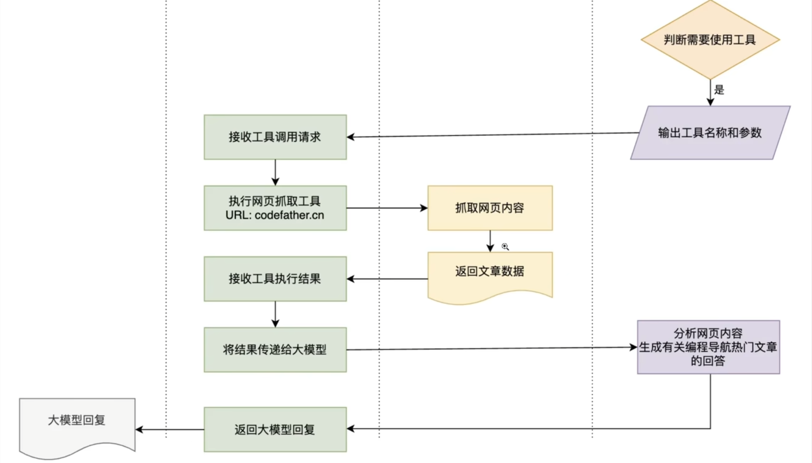

总结：
# SpringAI 核心特性
-
大模型调用能力
可以调用主流的大模型应用。
通过简单的配置就可以，也可以在配置中声明多个大模型。
支持流式编程
支持多模态调用，文本音频等 提问
强大的 ADvisors 机制（顾问机制）在模型调用前后 添加逻辑 实现日志记录，检查提示词是否安全 提问完后数据入库等
1
2
3
4
5
6
7
8
9
10
11
12spring:
ai:
#阿里大模型
dashscope:
chat:
options:
model:qwen-max
#本地大模型
ollama:
base-url:http://localhost:11434
chat :
model: gemma3:1b -
提示工程 (Prompt Engineering)
- 让 AI 更准确的理解用户的需求，生成更符合预期的回答，并且省钱优化 AI 模型的性能？
- Prompt 和 PromptTemplate 类来实现的
1
2
3
4
5//用户提示词
Message userMessage = New UserMessage(userText);
//系统提示词
Message systemMessage = new SystemMessage(systemText);
Prompt prompt = new Prompt(List,of(userText,systemText;));1
2
3
4
5
6
7//使用PromptTemplate
PromptTemplate pt = new PromptTemplate("你好我是{name},我擅长{skill}");
Prompt prompt = new PromptTemplate.create(Map,of(
"name","kuk",
"skill","编程",
));
ChatResponse response = chatClient.call(prompt) -
会话记忆
- 能保存多轮会话历史，理解上下文
- 能够实现会话隔离，上下文大小限制（最多保存 10 条记录）各种参数会自动限制 token
- 可扩展可以自己定义 ChatMemory 将数据存储到数据库或者持久化存储系统中
1
2
3
4
5
6
7
8
9
10
11
12
13
14String dochatwithMemory(String message,String chatId){
ChatResponse response =chatclient
.prompt()
.user(message)
.advisors(
//将对话记忆保存到内存中
new MessagechatMemoryAdvisor(new InMemoryChatMemory()
)
.advisors(spec ->spec.param(CHAT MEMORY CONVERSATION ID KEY,chatId)
.param(CHAT MEMORY RETRIEVE SIZE KEY,10))
.call()
.chatResponse();
return response.getResult().getOutput().getText();
} -
RAG（Retrieval-Augmented Generation）检索增强生成
-
是指利用外部知识增强 AI 生成结果的技术，通过从知识库中检索相关的信息并且注入到提示词中
-
除了基础的 RAG 能力外，提供了完整的 ETL 流程的支持，能够快速抽取文档，切分处理文档、并加载到向量存储中，** 还提供了多查询扩展器，** 提高召回文档的几率。
1
2
3
4
5MultiQueryExpander queryExpander = MultiQueryExpander.builder()
.chatclientBuilder(chatclientBuilder)
.numberOfOueries(3)
.build();
List<uery> queries = queryExpander.expand(new Query("谁是铁甲小宝?")); -
提供了 RAG 全流程的实现都提供了支持文档读取 比如 markdown，PDF 等
1
2
3
4
5
6
7
8
9
10
11
12
13public List<Document> loadDocuments(){
List<Document>documents =new ArraList<>();
//加载 Markdown 文档
Resource resource = retResourceLoader.getResource("classpath:documents/knowledge.md");
MarkdownDocumentReaderConfig config = MarkdownDocumentReaderConfig.builder()
.withHorizontalRuleCreateDocument(true)
.withIncludeCodeBlock(true)
.withAdditionalMetadata("source"，"knowledge-base")
.build();
MarkdownDocumentReader reader = new MarkdownDocumentReader(resource,config);
documents.addAll(reader.get());
return documents;
} -
利用 SpringAI 提供的 VectorStore 轻松将文档转换为向量并保存到向量数据中
1
2
3
4
5
6//创建简单向量存储
SimpleVectorStore vectorStore = SimpleVectorStore.builder(embeddingModel)
.build();
//加载文档并存储
List<Document> documents =documentLoader.loadDocuments();
vectorStore.add(documents); -
文档过滤检索 + 查询增强关联。直接使用 QuestionAnswerAdvisor,
1
2
3
4
5ChatResponse response = chatClient.prompt()
.user(question)
.advisors(new QuestionAnswerAdvisor(vectorStore))
.call()
.chatResponse();

-
-
工具调用 (Tool Calling)
-
早期被叫函数调用也可理解为


-
-
MCP（Model Context Protocol）模型协议
-
增强 AI 与外部系统的交互能力
-
先利用注解调用工具，然后将工具注册到 MCP 服务中
1
2
3
4
5
6
7
8
9
10
11
12
13
14
15
16
17
18
19
20
21
22
23
24
25
26//定义工具
public class ImageSearchTool{
public String searchImage(string qu)
//搜索图片，返回结果
return "https://www.codefather.cn";
}
}
//注册MCP服务
public ToolcallbackProvider imagesearchTools(){
return MethodToolcallbackProvider.builder()
.toolobjects(new ImagesearchTool())
.build();
}
//使用MCP
private ToolcallbackProvider toolcallbackProvider;
public String dochatwithMcp(String message){
ChatResponse response = chatclient
.prompt()
.user(message)
.tools(toolcallbackProvider)//MCP服务提供的所有工具
.ca11()
.chatResponse();
return response.getOutput().getText();
-